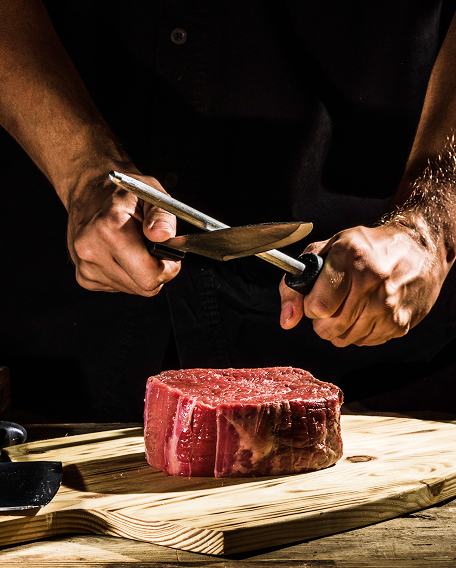
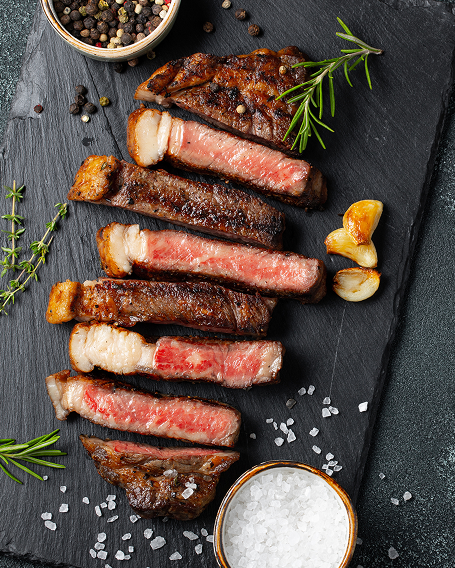

Our Story
Where Flavor
Meets Passion
Welcome to Steak Bistro! We are a cozy and friendly restaurant in the heart of Calasiao, Pangasinan, Philippines. Our chefs are passionate about food and love to mix classic steaks with the rich flavors of Filipino cuisine. Whether you’re here for a quick lunch, a family dinner, or a special occasion, we promise a great meal and warm hospitality.
Discover More Delight